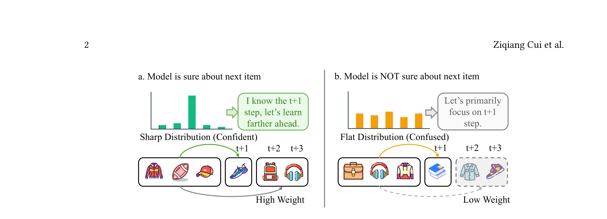
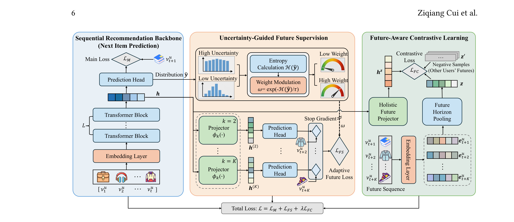
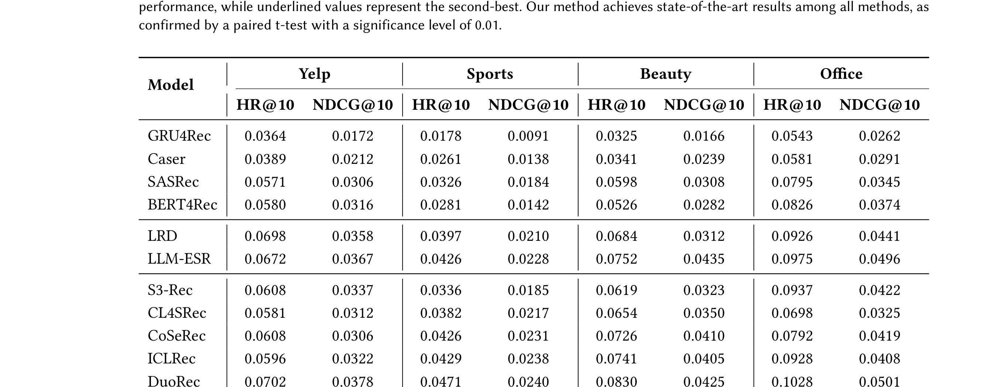
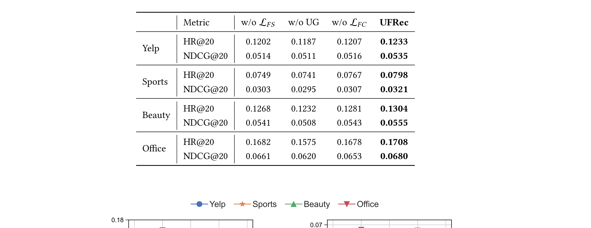
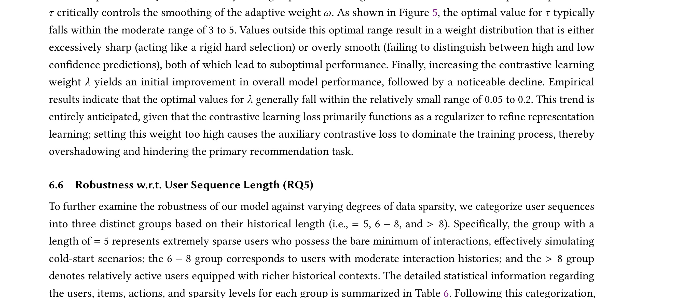

Looking Farther with Confidence: Uncertainty-Guided Future Learning for Sequential Recommendation 精读笔记
这篇论文讨论的是 带置信度的未来学习序列推荐。作者为 Ziqiang Cui, Xing Tang, Peiyang Liu, Xiaokun Zhang, Shiwei Li, Xiuqiang He, Chen Ma；一作主机构口径：City University of Hong Kong；合作机构包括 Shenzhen Technology University、Peking University、Huazhong University of Science and Technology。论文入口：arXiv:2605.28493。公开日期为 2026-05-27，来源为 arXiv v1 / cs.IR。代码/项目页状态：论文首页给出 ziqiangcui/UFRec 代码入口，本轮未审计仓库完整性。 主类别：推荐算法；次级标签：序列推荐、未来监督、不确定性、对比学习。
1. 背景和问题
补充背景 1：UFRec 需要放在近期论文池的共同变化里理解。过去一周的候选不再只展示更大的模型或更长的上下文，而是在追问 不确定性调制、future supervision、FACL 这些中间变量怎样被量化、怎样被训练、怎样进入服务路径。这个角度对读者很重要，因为推荐系统和大模型的实际收益往往不是由一个最终分数决定，而是由数据接口、缓存策略、评测分桶和失败回滚共同决定。序列推荐未来监督 在这里承担的是一个可复核样本：它把原先会被平均指标吞掉的细节放到实验中心。
补充背景 2：UFRec 需要放在近期论文池的共同变化里理解。过去一周的候选不再只展示更大的模型或更长的上下文，而是在追问 不确定性调制、future supervision、FACL 这些中间变量怎样被量化、怎样被训练、怎样进入服务路径。这个角度对读者很重要，因为推荐系统和大模型的实际收益往往不是由一个最终分数决定，而是由数据接口、缓存策略、评测分桶和失败回滚共同决定。序列推荐未来监督 在这里承担的是一个可复核样本：它把原先会被平均指标吞掉的细节放到实验中心。
补充背景 3：UFRec 需要放在近期论文池的共同变化里理解。过去一周的候选不再只展示更大的模型或更长的上下文，而是在追问 不确定性调制、future supervision、FACL 这些中间变量怎样被量化、怎样被训练、怎样进入服务路径。这个角度对读者很重要，因为推荐系统和大模型的实际收益往往不是由一个最终分数决定，而是由数据接口、缓存策略、评测分桶和失败回滚共同决定。序列推荐未来监督 在这里承担的是一个可复核样本：它把原先会被平均指标吞掉的细节放到实验中心。
补充背景 4：UFRec 需要放在近期论文池的共同变化里理解。过去一周的候选不再只展示更大的模型或更长的上下文，而是在追问 不确定性调制、future supervision、FACL 这些中间变量怎样被量化、怎样被训练、怎样进入服务路径。这个角度对读者很重要，因为推荐系统和大模型的实际收益往往不是由一个最终分数决定，而是由数据接口、缓存策略、评测分桶和失败回滚共同决定。序列推荐未来监督 在这里承担的是一个可复核样本：它把原先会被平均指标吞掉的细节放到实验中心。
补充背景 5：UFRec 需要放在近期论文池的共同变化里理解。过去一周的候选不再只展示更大的模型或更长的上下文，而是在追问 不确定性调制、future supervision、FACL 这些中间变量怎样被量化、怎样被训练、怎样进入服务路径。这个角度对读者很重要，因为推荐系统和大模型的实际收益往往不是由一个最终分数决定，而是由数据接口、缓存策略、评测分桶和失败回滚共同决定。序列推荐未来监督 在这里承担的是一个可复核样本：它把原先会被平均指标吞掉的细节放到实验中心。
UFRec 的问题起点是：只预测下一个 item 会浪费更长未来轨迹信息；但把多步未来监督均匀加到所有样本，又会在模型尚不确定时引入噪声。 这类问题在近期论文池里反复出现，说明推荐系统和大模型都开始从单点模型精度转向对中间状态、训练信号和系统接口的治理。今天把它列入精选，不是因为标题里有热门词，而是因为它把一个容易被平均指标掩盖的环节重新拆开，并给出可复核的实验或系统设计。
它值得看的原因可以用一句话概括：它把序列推荐中的 future supervision 从固定强度改成由当前预测置信度控制：模型确定时看得更远，不确定时回到 next-item 主任务。 如果只读摘要，容易把这篇论文归入已有路线；但从工程角度看，作者关心的是怎样让该路线在真实系统里可测、可控、可迁移。这样的论文通常比单纯刷新 leaderboard 更适合每日沉淀，因为它能改变后续读论文时的检查清单。
从大模型方向看，UFRec 关联的是训练后治理、记忆、检索、评价或旁路预测这些“主模型之外”的能力。现代 LLM 系统已经很少是一个模型独立完成任务，RAG、Agent memory、verifier、feature service 和 offline teacher 都会改变最终输出。论文把这些外围组件当成主要研究对象，因此对实际应用比表面任务更重要。
从推荐系统方向看，UFRec 的意义在于提醒我们不要把推荐链路简化成一个分数。召回、排序、重排、广告候选、用户历史和长期偏好都可能需要不同的监督强度和不同的服务成本。论文提供的机制可以帮助判断哪些能力应在线调用，哪些应离线蒸馏，哪些应转成特征或评测协议。
本轮阅读只使用 arXiv 摘要页、PDF 正文和 PDF 中可见链接作为事实源。具体数值若没有逐项表格复核，后文只按论文报告的相对结论描述，不把未核验数字扩写成业务事实。这条线对推荐系统工程的价值，更多体现在把大模型能力拆成可缓存、可蒸馏、可旁路接入的资产，而不是把大模型直接放到高 QPS 主链路。 这也是今天筛选时优先保留它的原因。
2. 方法
方法加深 1：UFRec 在复现时还需要把 序列推荐未来监督 拆成日志字段和训练批次两个层面。日志字段决定我们能否观察到论文中的中间变量，例如置信度、历史表征、诊断位置或候选实体碰撞；训练批次决定这些变量是否以正确分布进入优化。如果字段定义不稳定，模型可能在离线指标上学习到短期捷径；如果批次构造和线上请求差异太大，论文里的模块即使数学上成立，也会在 serving 阶段变成不可解释噪声。因此我会把数据生成、损失权重、在线使用点和失败回滚四件事绑定检查，而不是只检查模型代码是否能跑通。
方法加深 2：UFRec 在复现时还需要把 序列推荐未来监督 拆成日志字段和训练批次两个层面。日志字段决定我们能否观察到论文中的中间变量，例如置信度、历史表征、诊断位置或候选实体碰撞；训练批次决定这些变量是否以正确分布进入优化。如果字段定义不稳定，模型可能在离线指标上学习到短期捷径；如果批次构造和线上请求差异太大，论文里的模块即使数学上成立，也会在 serving 阶段变成不可解释噪声。因此我会把数据生成、损失权重、在线使用点和失败回滚四件事绑定检查，而不是只检查模型代码是否能跑通。
方法加深 3：UFRec 在复现时还需要把 序列推荐未来监督 拆成日志字段和训练批次两个层面。日志字段决定我们能否观察到论文中的中间变量，例如置信度、历史表征、诊断位置或候选实体碰撞；训练批次决定这些变量是否以正确分布进入优化。如果字段定义不稳定，模型可能在离线指标上学习到短期捷径；如果批次构造和线上请求差异太大，论文里的模块即使数学上成立，也会在 serving 阶段变成不可解释噪声。因此我会把数据生成、损失权重、在线使用点和失败回滚四件事绑定检查，而不是只检查模型代码是否能跑通。
方法加深 4：UFRec 在复现时还需要把 序列推荐未来监督 拆成日志字段和训练批次两个层面。日志字段决定我们能否观察到论文中的中间变量，例如置信度、历史表征、诊断位置或候选实体碰撞；训练批次决定这些变量是否以正确分布进入优化。如果字段定义不稳定，模型可能在离线指标上学习到短期捷径；如果批次构造和线上请求差异太大，论文里的模块即使数学上成立，也会在 serving 阶段变成不可解释噪声。因此我会把数据生成、损失权重、在线使用点和失败回滚四件事绑定检查，而不是只检查模型代码是否能跑通。
方法补充 1：阅读 UFRec 时，我会把 不确定性调制、future supervision、FACL 当作一组连续接口，而不是互不相干的技巧。第一个检查点是数据是否足够稳定：如果输入来自曝光日志、用户历史、检索结果或模型中间层，那么采样策略会直接决定训练信号。第二个检查点是目标是否可校准：如果模型只优化最终标签，就很难解释错误来自哪里；如果论文同时记录中间变量，就可以把收益拆到模块级。第三个检查点是服务成本：训练期可用的 teacher、future trajectory 或评测协议，未必能进入线上主链路，因此必须看作者是否提供了离线化、缓存化或旁路接入路径。
方法补充 2：阅读 UFRec 时，我会把 不确定性调制、future supervision、FACL 当作一组连续接口，而不是互不相干的技巧。第一个检查点是数据是否足够稳定：如果输入来自曝光日志、用户历史、检索结果或模型中间层，那么采样策略会直接决定训练信号。第二个检查点是目标是否可校准：如果模型只优化最终标签，就很难解释错误来自哪里；如果论文同时记录中间变量，就可以把收益拆到模块级。第三个检查点是服务成本：训练期可用的 teacher、future trajectory 或评测协议，未必能进入线上主链路，因此必须看作者是否提供了离线化、缓存化或旁路接入路径。
方法补充 3：阅读 UFRec 时，我会把 不确定性调制、future supervision、FACL 当作一组连续接口，而不是互不相干的技巧。第一个检查点是数据是否足够稳定：如果输入来自曝光日志、用户历史、检索结果或模型中间层，那么采样策略会直接决定训练信号。第二个检查点是目标是否可校准：如果模型只优化最终标签，就很难解释错误来自哪里；如果论文同时记录中间变量，就可以把收益拆到模块级。第三个检查点是服务成本：训练期可用的 teacher、future trajectory 或评测协议，未必能进入线上主链路，因此必须看作者是否提供了离线化、缓存化或旁路接入路径。
方法补充 4：阅读 UFRec 时，我会把 不确定性调制、future supervision、FACL 当作一组连续接口，而不是互不相干的技巧。第一个检查点是数据是否足够稳定：如果输入来自曝光日志、用户历史、检索结果或模型中间层，那么采样策略会直接决定训练信号。第二个检查点是目标是否可校准：如果模型只优化最终标签，就很难解释错误来自哪里；如果论文同时记录中间变量，就可以把收益拆到模块级。第三个检查点是服务成本：训练期可用的 teacher、future trajectory 或评测协议，未必能进入线上主链路，因此必须看作者是否提供了离线化、缓存化或旁路接入路径。
方法补充 5：阅读 UFRec 时，我会把 不确定性调制、future supervision、FACL 当作一组连续接口，而不是互不相干的技巧。第一个检查点是数据是否足够稳定：如果输入来自曝光日志、用户历史、检索结果或模型中间层，那么采样策略会直接决定训练信号。第二个检查点是目标是否可校准：如果模型只优化最终标签，就很难解释错误来自哪里；如果论文同时记录中间变量，就可以把收益拆到模块级。第三个检查点是服务成本：训练期可用的 teacher、future trajectory 或评测协议，未必能进入线上主链路，因此必须看作者是否提供了离线化、缓存化或旁路接入路径。
方法补充 6：阅读 UFRec 时，我会把 不确定性调制、future supervision、FACL 当作一组连续接口，而不是互不相干的技巧。第一个检查点是数据是否足够稳定：如果输入来自曝光日志、用户历史、检索结果或模型中间层，那么采样策略会直接决定训练信号。第二个检查点是目标是否可校准：如果模型只优化最终标签，就很难解释错误来自哪里；如果论文同时记录中间变量，就可以把收益拆到模块级。第三个检查点是服务成本：训练期可用的 teacher、future trajectory 或评测协议，未必能进入线上主链路，因此必须看作者是否提供了离线化、缓存化或旁路接入路径。
方法部分按论文原始思路拆成 4 个模块。为了避免把论文读成一个新名词，下面每个模块都说明输入、输出、训练或推理时的位置，以及它怎样缓解前文的问题。UFRec 的方法不应只看最终指标，必须把数据、损失、服务路径和评测假设放在一起读。
2.1 backbone next-item encoder：保留标准序列推荐主干
backbone next-item encoder：保留标准序列推荐主干 是论文方法链条中的第 1 个关键环节。它的输入来自前一阶段定义的用户上下文、模型状态、候选集合或训练样本，输出则会继续影响后续优化和评测。这里最重要的不是模块名称，而是接口：如果输入里包含有偏曝光、过期知识或未校准置信度，后续模块即使形式上复杂，也可能只是在放大旧问题。
训练视角下，backbone next-item encoder：保留标准序列推荐主干 需要把原始信号转成可学习对象。对 UFRec 来说，作者没有满足于最终分数，而是显式控制了该模块需要学习的中间变量：可能是 rank、历史表征、future step、diagnostic field、entity collision degree，或 advertiser prediction prior。这让实验能回答“收益来自哪里”，而不是只回答“模型有没有更高”。
推理或服务视角下，backbone next-item encoder：保留标准序列推荐主干 的代价同样需要单独看。有些组件只存在于训练期，可以承受较高成本；有些组件会进入在线路径，就必须面对延迟、缓存、增量更新和异常回退。论文的工程价值，正在于它尽量把高成本推理转成离线表征、训练奖励、评测协议或轻量旁路特征，使系统可以先小范围接入再扩大。

Figure 1 帮助理解 UFRec 为什么强调置信度。Fig. 1. An illustration of our proposed Uncertainty-Guided Future Supervision. 多步未来监督如果无差别施加，会把不确定状态里的远期行为噪声写进模型；UFRec 让模型在当前 next-item 预测有把握时才看得更远。图表里的主结果、消融或分组实验都应回到这个问题：未来轨迹究竟是在补充长期偏好，还是在放大曝光策略偏差。对线上序列推荐，training-only 的设计也很关键，它把复杂监督留在训练期，不增加 serving 延迟。
这个模块的边界也很清楚。backbone next-item encoder：保留标准序列推荐主干 如果被孤立使用，可能只是一项局部技巧；只有和后续模块结合，才能形成论文声称的整体收益。阅读 UFRec 时，我会特别检查它是否依赖不可公开的数据、是否要求昂贵 teacher、是否改变线上 serving path，以及失败时能否被监控。这些问题决定了它是否能从论文实验迁移到真实系统。
2.2 Uncertainty-Guided Future Supervision：按置信度调节多步 future loss
Uncertainty-Guided Future Supervision：按置信度调节多步 future loss 是论文方法链条中的第 2 个关键环节。它的输入来自前一阶段定义的用户上下文、模型状态、候选集合或训练样本，输出则会继续影响后续优化和评测。这里最重要的不是模块名称，而是接口：如果输入里包含有偏曝光、过期知识或未校准置信度，后续模块即使形式上复杂，也可能只是在放大旧问题。
训练视角下，Uncertainty-Guided Future Supervision：按置信度调节多步 future loss 需要把原始信号转成可学习对象。对 UFRec 来说，作者没有满足于最终分数，而是显式控制了该模块需要学习的中间变量：可能是 rank、历史表征、future step、diagnostic field、entity collision degree，或 advertiser prediction prior。这让实验能回答“收益来自哪里”，而不是只回答“模型有没有更高”。
推理或服务视角下，Uncertainty-Guided Future Supervision：按置信度调节多步 future loss 的代价同样需要单独看。有些组件只存在于训练期，可以承受较高成本；有些组件会进入在线路径，就必须面对延迟、缓存、增量更新和异常回退。论文的工程价值，正在于它尽量把高成本推理转成离线表征、训练奖励、评测协议或轻量旁路特征，使系统可以先小范围接入再扩大。
与“训练目标”相关的核心关系可以写成：
符号解释：L_next 是下一物品预测主损失，L_future 是第 k 步未来监督，w_k 由模型置信度调节，L_FACL 是未来感知对比学习项。 这个公式在笔记中承担的是接口说明作用：它把论文中的自然语言主张变成可检查变量。复现时应先确认这些变量是否能从自己的数据或日志里稳定得到，再考虑照搬模型结构。
与“置信调制”相关的核心关系可以写成：
符号解释：c_t 是当前状态下 next-item 预测置信度，g 在高置信时提高远期监督权重，在低置信时收缩到近端目标。 这个公式在笔记中承担的是接口说明作用：它把论文中的自然语言主张变成可检查变量。复现时应先确认这些变量是否能从自己的数据或日志里稳定得到，再考虑照搬模型结构。
这个模块的边界也很清楚。Uncertainty-Guided Future Supervision：按置信度调节多步 future loss 如果被孤立使用，可能只是一项局部技巧；只有和后续模块结合，才能形成论文声称的整体收益。阅读 UFRec 时，我会特别检查它是否依赖不可公开的数据、是否要求昂贵 teacher、是否改变线上 serving path，以及失败时能否被监控。这些问题决定了它是否能从论文实验迁移到真实系统。
2.3 Future-Aware Contrastive Learning：把未来轨迹作为整体语义对象
Future-Aware Contrastive Learning：把未来轨迹作为整体语义对象 是论文方法链条中的第 3 个关键环节。它的输入来自前一阶段定义的用户上下文、模型状态、候选集合或训练样本，输出则会继续影响后续优化和评测。这里最重要的不是模块名称，而是接口：如果输入里包含有偏曝光、过期知识或未校准置信度，后续模块即使形式上复杂，也可能只是在放大旧问题。
训练视角下，Future-Aware Contrastive Learning：把未来轨迹作为整体语义对象 需要把原始信号转成可学习对象。对 UFRec 来说，作者没有满足于最终分数，而是显式控制了该模块需要学习的中间变量：可能是 rank、历史表征、future step、diagnostic field、entity collision degree，或 advertiser prediction prior。这让实验能回答“收益来自哪里”，而不是只回答“模型有没有更高”。
推理或服务视角下，Future-Aware Contrastive Learning：把未来轨迹作为整体语义对象 的代价同样需要单独看。有些组件只存在于训练期，可以承受较高成本；有些组件会进入在线路径，就必须面对延迟、缓存、增量更新和异常回退。论文的工程价值，正在于它尽量把高成本推理转成离线表征、训练奖励、评测协议或轻量旁路特征，使系统可以先小范围接入再扩大。
这个模块的边界也很清楚。Future-Aware Contrastive Learning：把未来轨迹作为整体语义对象 如果被孤立使用，可能只是一项局部技巧；只有和后续模块结合，才能形成论文声称的整体收益。阅读 UFRec 时，我会特别检查它是否依赖不可公开的数据、是否要求昂贵 teacher、是否改变线上 serving path，以及失败时能否被监控。这些问题决定了它是否能从论文实验迁移到真实系统。
2.4 training-only auxiliary design：不增加线上推理成本
training-only auxiliary design：不增加线上推理成本 是论文方法链条中的第 4 个关键环节。它的输入来自前一阶段定义的用户上下文、模型状态、候选集合或训练样本，输出则会继续影响后续优化和评测。这里最重要的不是模块名称，而是接口：如果输入里包含有偏曝光、过期知识或未校准置信度，后续模块即使形式上复杂，也可能只是在放大旧问题。
训练视角下，training-only auxiliary design：不增加线上推理成本 需要把原始信号转成可学习对象。对 UFRec 来说，作者没有满足于最终分数，而是显式控制了该模块需要学习的中间变量：可能是 rank、历史表征、future step、diagnostic field、entity collision degree，或 advertiser prediction prior。这让实验能回答“收益来自哪里”，而不是只回答“模型有没有更高”。
推理或服务视角下，training-only auxiliary design：不增加线上推理成本 的代价同样需要单独看。有些组件只存在于训练期，可以承受较高成本；有些组件会进入在线路径，就必须面对延迟、缓存、增量更新和异常回退。论文的工程价值，正在于它尽量把高成本推理转成离线表征、训练奖励、评测协议或轻量旁路特征，使系统可以先小范围接入再扩大。
这个模块的边界也很清楚。training-only auxiliary design：不增加线上推理成本 如果被孤立使用，可能只是一项局部技巧；只有和后续模块结合，才能形成论文声称的整体收益。阅读 UFRec 时，我会特别检查它是否依赖不可公开的数据、是否要求昂贵 teacher、是否改变线上 serving path，以及失败时能否被监控。这些问题决定了它是否能从论文实验迁移到真实系统。

Figure 2 帮助理解 UFRec 为什么强调置信度。Fig. 2. Overview of the proposed UFRec framework. (1) The sequential recommendation backbone (left) encodes the user’s historical 多步未来监督如果无差别施加，会把不确定状态里的远期行为噪声写进模型；UFRec 让模型在当前 next-item 预测有把握时才看得更远。图表里的主结果、消融或分组实验都应回到这个问题：未来轨迹究竟是在补充长期偏好，还是在放大曝光策略偏差。对线上序列推荐，training-only 的设计也很关键，它把复杂监督留在训练期，不增加 serving 延迟。
3. 实验结果
实验补充 1：UFRec 的实验应按问题假设逐层阅读。首先看主结果是否说明 序列推荐未来监督 的整体方向有效；其次看消融是否真的对应 不确定性调制、future supervision、FACL 中的某个变量；再次看不同数据集、模型规模或用户分组是否改变结论。若只记录平均提升，会错过论文最有用的信息：哪些条件下机制有效，哪些条件下只是噪声，哪些指标无法支撑作者的强结论。对工程复现而言，负结果和弱收益同样重要，因为它们决定是否值得把这条路线推进到在线实验。
实验补充 2：UFRec 的实验应按问题假设逐层阅读。首先看主结果是否说明 序列推荐未来监督 的整体方向有效；其次看消融是否真的对应 不确定性调制、future supervision、FACL 中的某个变量；再次看不同数据集、模型规模或用户分组是否改变结论。若只记录平均提升，会错过论文最有用的信息：哪些条件下机制有效，哪些条件下只是噪声，哪些指标无法支撑作者的强结论。对工程复现而言，负结果和弱收益同样重要，因为它们决定是否值得把这条路线推进到在线实验。
实验补充 3：UFRec 的实验应按问题假设逐层阅读。首先看主结果是否说明 序列推荐未来监督 的整体方向有效；其次看消融是否真的对应 不确定性调制、future supervision、FACL 中的某个变量；再次看不同数据集、模型规模或用户分组是否改变结论。若只记录平均提升，会错过论文最有用的信息：哪些条件下机制有效，哪些条件下只是噪声，哪些指标无法支撑作者的强结论。对工程复现而言，负结果和弱收益同样重要，因为它们决定是否值得把这条路线推进到在线实验。
实验补充 4：UFRec 的实验应按问题假设逐层阅读。首先看主结果是否说明 序列推荐未来监督 的整体方向有效；其次看消融是否真的对应 不确定性调制、future supervision、FACL 中的某个变量；再次看不同数据集、模型规模或用户分组是否改变结论。若只记录平均提升，会错过论文最有用的信息：哪些条件下机制有效，哪些条件下只是噪声，哪些指标无法支撑作者的强结论。对工程复现而言，负结果和弱收益同样重要，因为它们决定是否值得把这条路线推进到在线实验。
实验补充 5：UFRec 的实验应按问题假设逐层阅读。首先看主结果是否说明 序列推荐未来监督 的整体方向有效；其次看消融是否真的对应 不确定性调制、future supervision、FACL 中的某个变量；再次看不同数据集、模型规模或用户分组是否改变结论。若只记录平均提升，会错过论文最有用的信息：哪些条件下机制有效，哪些条件下只是噪声，哪些指标无法支撑作者的强结论。对工程复现而言，负结果和弱收益同样重要，因为它们决定是否值得把这条路线推进到在线实验。
实验部分的核心不是简单证明 UFRec 最好，而是检验方法链条中的关键假设。论文报告的实验范围为：论文在四个 benchmark 数据集上报告 HR@10/NDCG@10、HR@20/NDCG@20、不同 backbone 的泛化、UGFS/FACL 消融、K/τ/λ 超参以及不同用户序列长度分组效果。 这些实验共同回答三类问题：主方法是否超过强 baseline，核心模块是否真的必要，收益是否能在不同数据、模型或系统阶段保持。
3.1 Table 3 对应的实验信号
这一组证据关注 Table 3. Performance comparison of different methods on four datasets (HR@10 and NDCG@10). Bold font indicates the best。在读实验表或曲线时，我不只看第一名，而会先看 baseline 是否足够强、指标是否与论文问题一致、以及消融是否能定位收益来源。UFRec 的实验如果只被理解成“某方法更高”，就会漏掉它对评测口径或系统设计的真正贡献。

Table 3 帮助理解 UFRec 为什么强调置信度。Table 3. Performance comparison of different methods on four datasets (HR@10 and NDCG@10). Bold font indicates the best 多步未来监督如果无差别施加，会把不确定状态里的远期行为噪声写进模型；UFRec 让模型在当前 next-item 预测有把握时才看得更远。图表里的主结果、消融或分组实验都应回到这个问题：未来轨迹究竟是在补充长期偏好，还是在放大曝光策略偏差。对线上序列推荐，training-only 的设计也很关键，它把复杂监督留在训练期，不增加 serving 延迟。
从工程角度看，这张图表还提示一个落地检查点：如果要在自己的系统中复现 UFRec，应该先构建与图表相同的中间指标，而不是直接追最终业务指标。只有当中间指标方向一致，最终线上收益才有解释空间；否则即使 A/B 有波动，也很难判断是算法机制、数据分布还是实验噪声造成的。
3.2 Table 5 对应的实验信号
这一组证据关注 Table 5. Ablation study on all datasets.。在读实验表或曲线时，我不只看第一名，而会先看 baseline 是否足够强、指标是否与论文问题一致、以及消融是否能定位收益来源。UFRec 的实验如果只被理解成“某方法更高”，就会漏掉它对评测口径或系统设计的真正贡献。

Table 5 帮助理解 UFRec 为什么强调置信度。Table 5. Ablation study on all datasets. 多步未来监督如果无差别施加，会把不确定状态里的远期行为噪声写进模型；UFRec 让模型在当前 next-item 预测有把握时才看得更远。图表里的主结果、消融或分组实验都应回到这个问题：未来轨迹究竟是在补充长期偏好，还是在放大曝光策略偏差。对线上序列推荐，training-only 的设计也很关键，它把复杂监督留在训练期，不增加 serving 延迟。
从工程角度看，这张图表还提示一个落地检查点：如果要在自己的系统中复现 UFRec，应该先构建与图表相同的中间指标，而不是直接追最终业务指标。只有当中间指标方向一致，最终线上收益才有解释空间；否则即使 A/B 有波动，也很难判断是算法机制、数据分布还是实验噪声造成的。
3.3 Figure 6 对应的实验信号
这一组证据关注 Figure 6 presents the performance comparison results on the Yelp and Sports datasets. By comparing our model with。在读实验表或曲线时，我不只看第一名，而会先看 baseline 是否足够强、指标是否与论文问题一致、以及消融是否能定位收益来源。UFRec 的实验如果只被理解成“某方法更高”，就会漏掉它对评测口径或系统设计的真正贡献。

Figure 6 帮助理解 UFRec 为什么强调置信度。Figure 6 presents the performance comparison results on the Yelp and Sports datasets. By comparing our model with 多步未来监督如果无差别施加，会把不确定状态里的远期行为噪声写进模型；UFRec 让模型在当前 next-item 预测有把握时才看得更远。图表里的主结果、消融或分组实验都应回到这个问题：未来轨迹究竟是在补充长期偏好，还是在放大曝光策略偏差。对线上序列推荐，training-only 的设计也很关键，它把复杂监督留在训练期，不增加 serving 延迟。
从工程角度看，这张图表还提示一个落地检查点：如果要在自己的系统中复现 UFRec，应该先构建与图表相同的中间指标，而不是直接追最终业务指标。只有当中间指标方向一致，最终线上收益才有解释空间；否则即使 A/B 有波动，也很难判断是算法机制、数据分布还是实验噪声造成的。
总体上，UFRec 的实验证据比较适合做“设计清单”而不是“直接承诺收益”。论文展示了明确的相对趋势，但真实系统还需要重新验证数据规模、候选构造、延迟预算和隐私约束。报告中的具体数值我没有在本轮逐格复算，因此只把论文给出的方向性结论作为事实，把外推判断都放在总结章节。
4. 总结
4.1 我的判断
总结补充 1：我会把 UFRec 作为后续跟踪 序列推荐未来监督 的参照点，而不是把它理解成一次性结论。真正值得延续的是它的检查方式：先定义可观测变量，再做分层消融，最后讨论服务成本和失败模式。这个顺序能减少论文调研中的误判，也能让后续复现更快发现问题所在。
总结补充 2：我会把 UFRec 作为后续跟踪 序列推荐未来监督 的参照点，而不是把它理解成一次性结论。真正值得延续的是它的检查方式：先定义可观测变量，再做分层消融，最后讨论服务成本和失败模式。这个顺序能减少论文调研中的误判，也能让后续复现更快发现问题所在。
我对 UFRec 的判断是：它的价值主要不在于提出一个可以立即替换生产模型的单点模块，而在于把 带置信度的未来学习序列推荐 这个问题拆成了更容易复核的工程变量。对 LLM agent 或个性化记忆，类似思想可以迁移为“高置信状态做长程规划，低置信状态先补近端证据”，避免过早把远期假设写进模型。 UFRec 对工程推荐的直接意义是：多目标或多步监督不应平均施加，样本级置信度可以成为训练信号调度器，尤其适合稀疏用户和长尾行为。 这种拆法能降低后续讨论的含混度。
如果只从论文新鲜度看，它属于 2026-05-27 至 2026-05-29 这一批 arXiv 新公开工作；如果从长期跟踪价值看，它更像一个可以反复引用的范式样本。后续读类似论文时，我会用它提供的检查表去追问：训练信号是否可靠，服务路径是否清楚，评测是否排除了混淆变量，收益是否被足够细的消融解释。
4.2 局限与风险
- 置信度本身若未校准，可能把模型已有偏差放大。
- 未来轨迹在离线数据中受曝光策略影响，不等于用户真实长期偏好。
- training-only 模块不增加推理成本，但训练成本和调参复杂度会上升。
- 公开数据集验证不一定覆盖工业推荐中的实时兴趣漂移和多目标约束。
这些局限不会否定论文价值，但会影响落地优先级。真正进入系统之前，需要把论文的公开实验转成自己的数据切片、延迟预算、监控指标和回滚策略。尤其是涉及用户记忆、广告预测、长期偏好和检索归因的工作，不能只看离线指标，也要检查隐私、偏差和线上可解释性。
4.3 后续跟进
- 等待代码发布后检查置信度函数和 future sampling 实现。
- 把 UFRec 与 long-term interest、session-based rec 和广告转化延迟监督结合比较。
- 观察是否能用 calibration 或 uncertainty estimation 改进 w_k 可靠性。